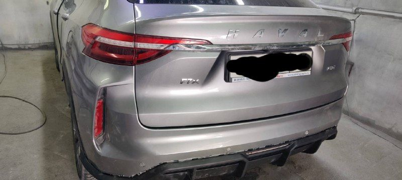
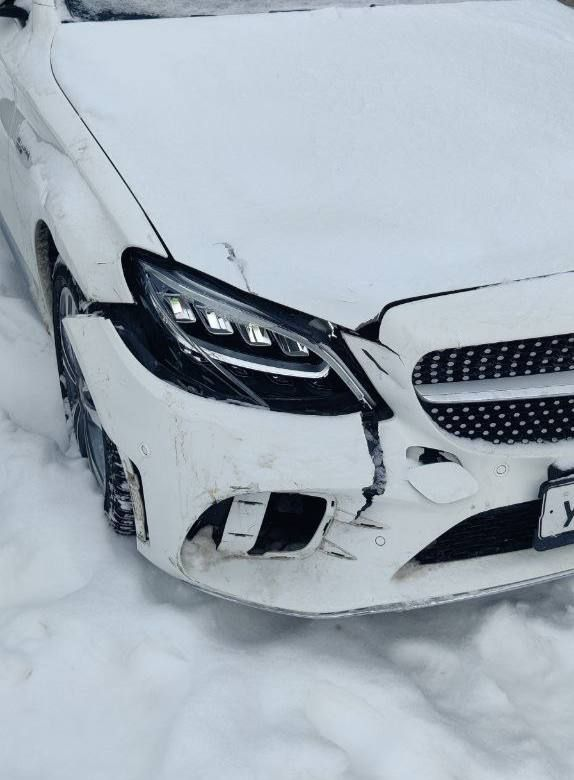

Work Style
Кузовной ремонт и покраска в Набережных Челнах
Кузовной ремонт, покраска и полировка. Ниже — фотографии работ, опубликованные мастерской Work Style.


Услуги
С чем поможем
Кузовной ремонт
Покраска автомобилей и деталей
Полировка
Установка новых деталей по зазорам


Mercedes C43: до и после ремонта
В публикации мастерской указаны ремонт и покраска капота и крыла, покраска нового переднего бампера.



Контакты
Как нас найти
Центральная ул., 72А, посёлок ГЭС, Набережные ЧелныОткрыть на карте ↗